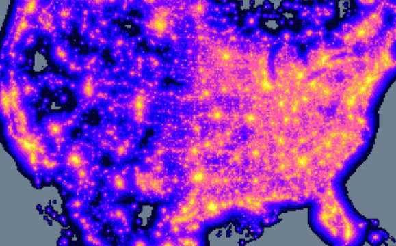

Noise and Light Pollution From Humans Alter Bird Reproduction

Human-produced noise and light pollution are troublesome to our avian neighbors, according to new research from a team at California Polytechnic State University, published November 11 in Nature.
Using NASA satellite data, the researchers got a bird’s-eye view of how noise and light negatively affected bird reproduction in North America. The team also discovered that these factors might interact with or even mask birds’ responses to the effects of climate change.
Bird populations have declined by about 30 percent in the last few decades. Scientists and land managers seeking to understand what caused the decline and reverse the trend had largely overlooked the effects of noise and light pollution, until recent studies suggested that these stressors could harm certain types of birds.
Prior to the launch of the Visible Infrared Imaging Radiometer Suite (VIIRS) instrument aboard the joint NASA-National Oceanic and Atmospheric Association (NOAA) Suomi National Polar-orbiting Partnership (NPP) satellite in 2011, high resolution light pollution data didn’t exist on such a large scale. This new study has produced a continent-wide picture utilizing VIIRS data.
“Our study provides comprehensive evidence that noise and light can profoundly alter reproduction of birds, even when accounting for other aspects of human activities,” said Clint Francis, a biologist at California Polytechnic State University, San Luis Obispo, California, one of the lead authors on the study.
The research team looked at a vast collection of data sets – including those collected by citizen scientists through the NestWatch Program – to assess how light and noise affected the reproductive success of 58,506 nests from 142 bird species across North America. They considered several factors for each nest, including the time of year when breeding occurred and whether at least one chick fledged – or flew – from the nest.
Birds’ reproduction coincides with peak food availability to feed their young, as daylight cues signal to breed around the same time each year. The researchers found that light pollution causes birds to begin nesting as much as a month earlier than normal in open environments, such as grasslands or wetlands, and 18 days earlier in forested environments. The consequence could be a mismatch in timing – for example, hungry chicks may hatch before their food is readily available. If that happens, these early season nests may be less successful at fledging at least one chick, but the situation is complicated by climate change.
As the planet warms, birds’ food is available earlier due to warmer weather. Birds that maintain their historical breeding times because their internal clocks are set to changes in daylength may have fewer chicks survive because the food source they rely on already came and went.
“We discovered that the birds that advanced the timing of their reproduction in response to increased light pollution actually have better reproductive success,” Francis said. “A likely interpretation of this response is that light pollution actually allows these birds to ‘catch up’ to the shift towards earlier availability of food due to climate change.”
These findings suggest two conclusions about birds’ responses to climate change. First, at least temporarily, birds in lit conditions may be tracking climate change better than those in dark areas. Second, when scientists thought birds were adjusting their reproductive timing to climate change, birds may have actually been instead responding to light cues since many studies were done in areas exposed to some light pollution.
When considering noise pollution, results showed that birds that live in forested environments tend to be more sensitive to noise than birds in open environments.
Researchers delved into greater detail in 27 different bird species, looking for physical traits that could explain the variations in species’ responses to light and noise. A bird’s ability to see in low light and the pitch of its call were related to species’ responses to light and noise pollution.
The more light a bird’s eye is capable of taking in, the more that species moved its breeding time earlier in the year in response to light pollution, and the more that species benefited from light pollution with improved nest success. Noise pollution delayed nesting for birds’ whose songs are at a lower frequency and thus more difficult to hear through low-frequency human noise. Mating decisions are made based on the male’s song, and in some cases, females need to hear the male’s song to become physically ready to breed. These trait and environment-specific results have strong implications for managing wild lands. Developers and land managers could use this study to understand how their plans are likely to affect birds. For example, Francis says, “Is it a forest bird? If so, it is likely that it is more sensitive to light and noise.”
The study is the first step toward a larger goal of developing a sensitivity index for all North American birds. The index would allow managers and conservationists to cross-reference multiple physical traits for one species to assess how factors such as light and noise pollution would affect each species.
See more News